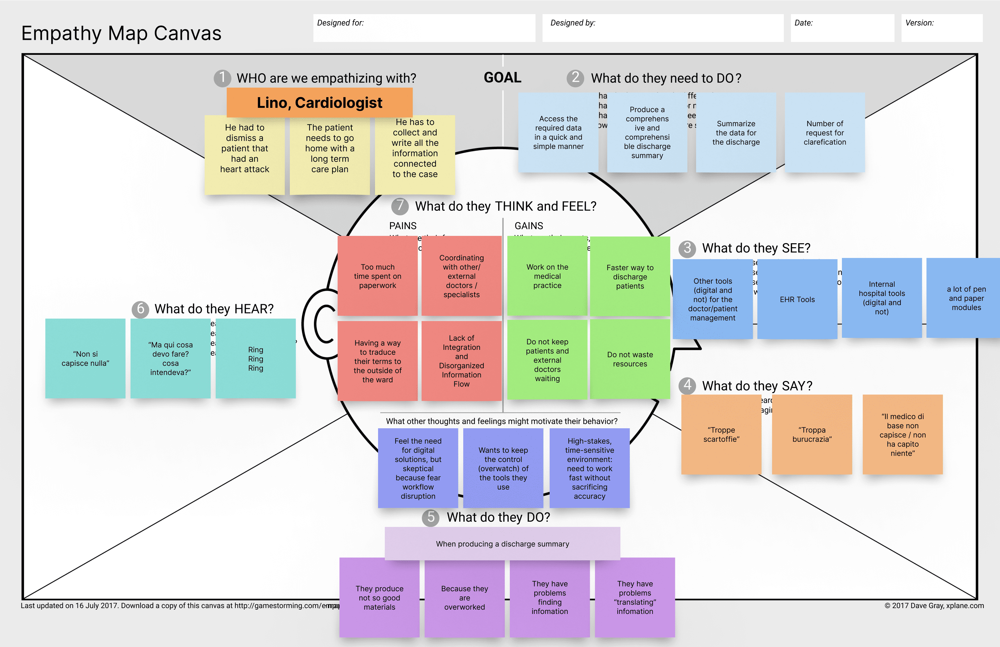
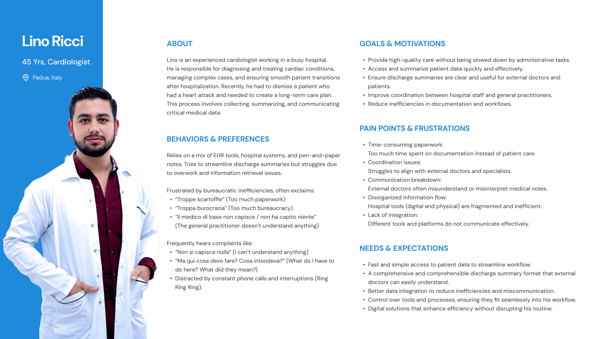
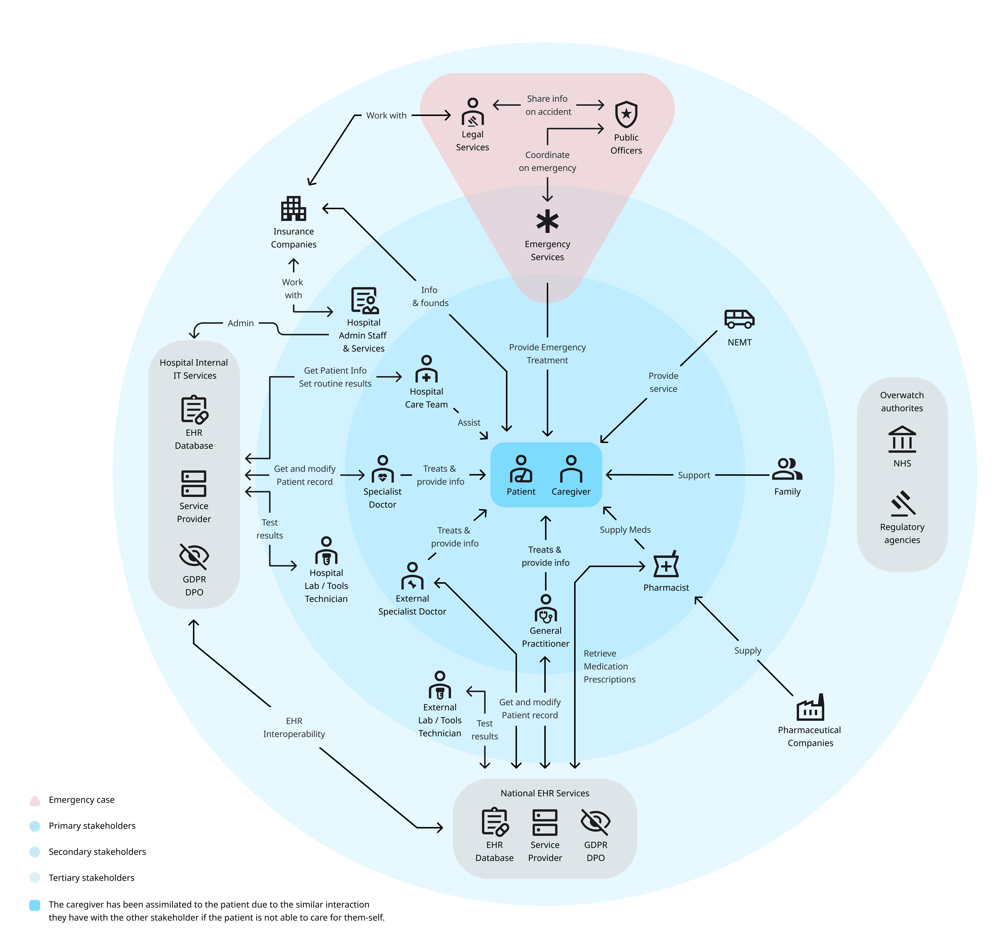
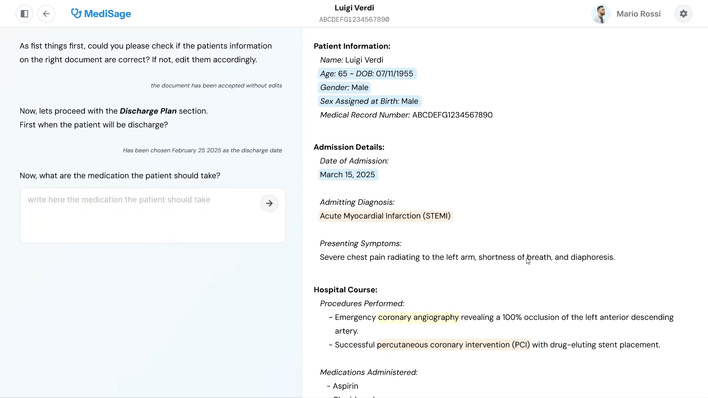
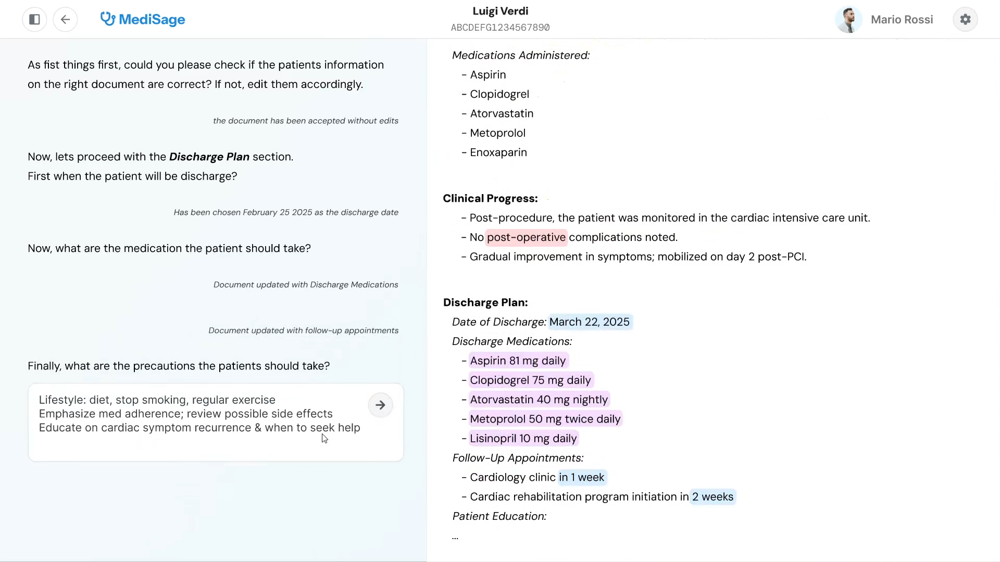

In the Loop, Designing Trustworthy AI for Clinical Discharge
- Sole Designer
- UX Researcher
- Interaction Designer
- Prototyper
- Andrea Picardi
- Michele Ronchi
- Tomas Antonio Lopez
- Elibertoandrea Franchi
- Project report available on request
This started as a one-week concept workshop inside the HCI 4 AI course, which asked what could realistically be done with AI inside a real clinical workflow.

We began making sense of the user with an empathy map, then consolidated it into a persona: Lino Ricci, a 45-year-old cardiologist in a busy hospital. With no time to interview real clinicians, this was a deliberate working hypothesis rather than validated research, grounded in the firsthand experience of team members who work with practitioners directly, including biotechnology PhDs whose research puts them alongside clinicians, and supported by the literature on physician burnout and documentation load. It gave us a sharp, consistent person to design against. Lino spends too much of his day on paperwork instead of patients. He struggles to coordinate with external doctors, who frequently misread or misinterpret his notes. The tools around him, digital and paper, are fragmented and do not communicate. And underneath all of it, three insights shaped every later design decision: he wants to stay in control of his tools, he is skeptical of digital solutions because he fears they will disrupt his workflow, and he works in a time-sensitive, high-stakes environment where accuracy cannot be traded for speed.

A specific, concrete problem sat at the center of the discharge task. Over a single hospital stay, many practitioners describe the same clinical reality in different words. By the time the discharge summary is written, that inconsistent terminology has to be collected, reconciled, and translated into something unambiguous for whoever reads it next. This was the problem the tool was built to attack.
Before designing anything, we mapped the stakeholder ecosystem around the discharge document. Although the tool itself would be used by one person, that document travels through a dense, regulated network: hospital care teams, external specialists and GPs, labs, pharmacists, national EHR services, insurers, and the data-protection and regulatory authorities (GDPR and DPO, national health-service and regulatory bodies) that govern it. Mapping primary, secondary, and tertiary stakeholders made the constraints explicit. This is data that must be accurate, traceable, and compliant, which reinforced why the human had to stay accountable for whatever the AI produced.

The core decision was to keep the human in the loop by design, not as a safety afterthought, but because the user model pointed to trust and control as prerequisites for adoption. The assistant does the heavy lifting of retrieval, reconciliation, and drafting. The doctor verifies, edits, and approves. Two back-end principles anchored this: the system always treats the EHR and the doctor’s own input as the ground truth, and it always lets the doctor override or modify any automated decision, regenerating the affected parts on demand.
The interface is built around two synchronized panels. A guided chat on the left leads the doctor through the task step by step, and the live discharge document on the right updates as they go. Selecting a patient is its own first screen, with sorting, a card or table toggle, and search by name or record code, so the doctor leans on recognition rather than recall and the tool feels like the hospital systems they already know. The split keeps the conversation and its product visible at the same time, so the doctor always sees what the assistant is doing to the document, never just a black-box result.


The most important interaction detail is how the document shows where each piece of data came from and how certain the system is about it. The text is colour-coded so the doctor can aim their attention:
- Blue: fixed, structured data edited through input wizards (for example dates or formats).
- Red: no match found in the database, so the field needs the doctor’s verification.
- Orange: a partial match was found, suggested but not yet confirmed.
- Yellow: several candidate terms were found, and the doctor picks the right one from a dropdown.
- Purple: text written or rewritten by the language model, flagged for review.
Behind the scenes, the medical terms are matched against a standardized vocabulary so the same clinical reality is always written the same way. The colours are how that matching becomes visible and reviewable. Rather than asking the doctor to accept an opaque draft, the system makes its confidence and its authorship legible at a glance, so review effort goes where the uncertainty is. And every field stays freely editable. The assistant proposes, the doctor disposes. That is the override mechanism, available everywhere, at all times.
A concept is only worth designing if the back-end can support it, and a significant part of the team’s work was dedicated to verifying exactly that. The assistant relies on the ChatGPT API for the conversational drafting and on the OMOP Common Data Model (version 5.4) for the medical vocabulary, an ontology that bundles widely used standards such as SNOMED-CT and ICD-10 so the chosen terms stay interoperable across hospitals and specialists. To match a doctor’s free-text wording to a standard concept, the working prototype used PostgreSQL full-text search, with a vector database of concept embeddings identified as the more semantically accurate approach for future development.
That technical groundwork directly shaped the design. Knowing what the system could reliably do, and where it needed human input to compensate, is what justified the interaction choices: the provenance colours are the human-facing expression of that pipeline, surfacing the system’s confidence at each field so the doctor can calibrate their trust and focus their attention where it matters.
The full workflow is a back-and-forth: the assistant proposes at each step, the doctor reviews and confirms before moving on. From patient selection to final export, it runs as follows:
- Initiation: Lino opens his list of patients and selects one. The assistant pulls that patient’s records from the EHR service.
- Drafting and standardization: From the retrieved data the assistant generates a first structured summary, isolates the medical terms, looks each one up against the OMOP vocabulary, and proposes standardized replacements in context. On the right, the colour-coded document shows what matched cleanly, what was partial, what had several candidates, and what is missing.
- Guided verification: The chat walks Lino through checking the data. He confirms, corrects, or picks the right term from a dropdown, and edits anything freely.
- Co-writing the summary: The chat asks for the discharge notes and the ongoing care plan. Lino writes them in his own words. The assistant reformats and completes them on the right, filling the missing parts of the blueprint and marking everything it authored in purple. This hand-off repeats for a few turns until the summary is whole.
- Output: The finished document can be downloaded as a PDF or submitted to the national health record system. Because the workflow is non-linear, Lino can step back to any point in the chat to fix an inaccuracy or a hallucination without restarting.
Read against the vocabulary of human-agent interaction, the model covers the full set: initiation (selecting a patient triggers retrieval), guidance (the step-by-step chat), feedback (the provenance colours and the purple authorship marks), handover (the turn-taking between doctor and assistant), override (every field editable, every step revisitable), and failure handling (the red state when the database has no answer).

Faced with a skeptical, high-stakes user who needed to stay in control, the proposed design keeps the human as the decision-maker by intent: the assistant retrieves, reconciles, and drafts, while the doctor verifies, edits, and approves at every step. The provenance colour system is the clearest expression of that stance. Instead of asking a clinician to trust an opaque draft, it makes the source and the confidence of every field legible, so trust is earned field by field and review effort goes where the uncertainty actually is. Override stays available everywhere, the workflow forgives mistakes, and the system surfaces its uncertainty rather than hiding it. Together these are the foundations of a human-agent model that could grow more autonomous without ever taking the human out of the loop.
The tool was built as the design groundwork for a study that would put these trust mechanisms in front of real clinicians, the qualitative validation the assumption-based persona calls for. But the idea it sets out stands on its own: in safety-critical work, AI earns its place not by doing more on its own, but by being transparent enough that the expert can confidently rely on it.